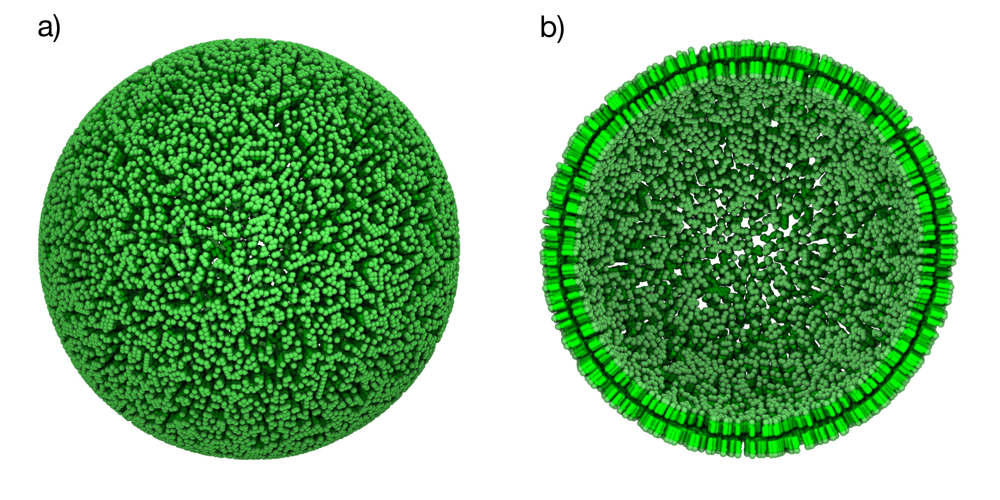
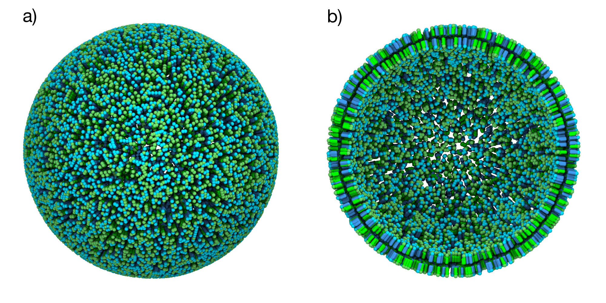
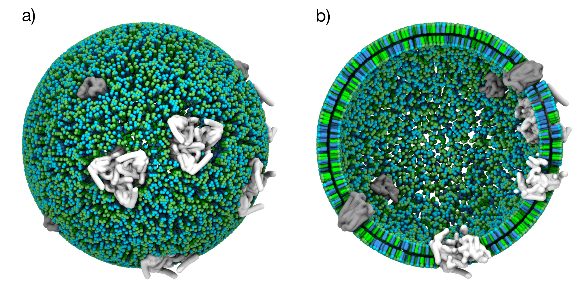
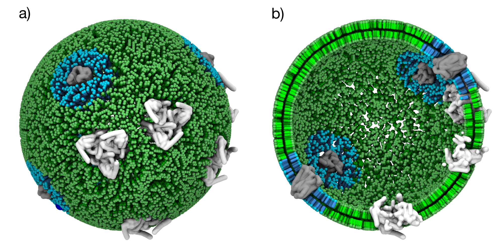
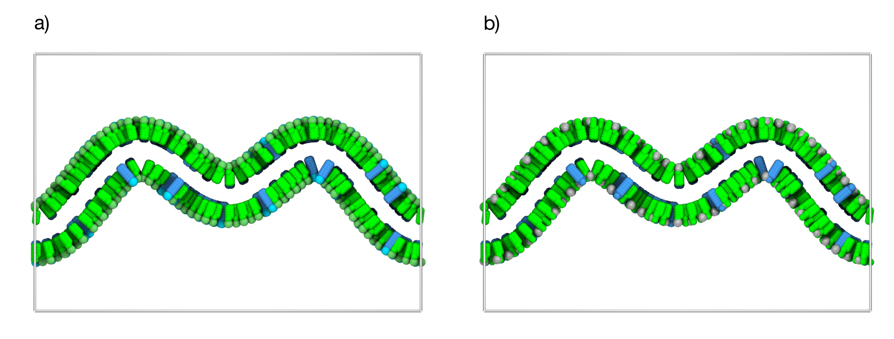
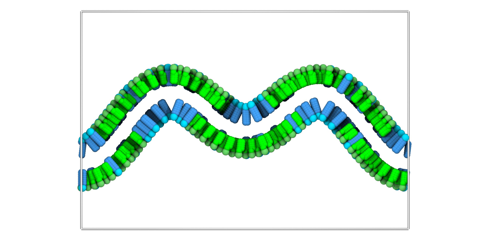

TS2CG 2.0 as a membrane builder
Tutorial authors: J.A. Stevens, with contributions from F. Schuhmann, C.M. Brown and M. Bozoflu
In case of issues: Please contact j.a.stevens@rug.nl, fabian.schuhmann@nbi.ku.dk or weria.pezeshkian@nbi.ku.dk
Table of Contents
- Introduction
- Installation and Setup
- Chapter 1: Basic Uniform Vesicle
- Chapter 2: Lipid Mixtures
- Chapter 3: Membrane Proteins
- Chapter 4: Lipid Domains Around Proteins
- Chapter 5: Analytical Shapes
- Chapter 6: Curvature-Based Lipid Placement
- References
Introduction
TS2CG is a tool for building coarse-grained (CG) membrane models with user-defined and experimentally informed shapes and compositions\(^1\). It builds simulation-ready membrane models for molecular dynamics (MD) simulations, based on triangulated surfaces or analytical membrane shape definitions. Additionally, TS2CG serves as a backmapping algorithm that converts dynamically triangulated surface (DTS) simulations into CG MD simulations\(^{2, 3}\).
The latest release is TS2CG version 2.0, representing an advancement in membrane modeling capabilities\(^1\). Building upon the original TS2CG, version 2.0 introduces new features for automated protein placement and curvature-informed lipid distributions. Additionally, it features a Python API that improves ease of use and enables easier extensibility through integration with Python modules.
 Figure 1: TS2CG 2.0 showcase models\(^1\). a) Mitochondrial crista with curvature-sorted lipids and proteins\(^4\) b) Martini 3 Möbius strip membrane c) Glycolipid membrane with CTxB peripheral membrane protein d) Mitochondrial membrane from cryo-ET data with curvature-dependent lipid placement.
Figure 1: TS2CG 2.0 showcase models\(^1\). a) Mitochondrial crista with curvature-sorted lipids and proteins\(^4\) b) Martini 3 Möbius strip membrane c) Glycolipid membrane with CTxB peripheral membrane protein d) Mitochondrial membrane from cryo-ET data with curvature-dependent lipid placement.
TS2CG enables the creation of biologically realistic membrane models by providing precise control over membrane geometry, protein placement, and lipid composition. Designed primarily for the Martini coarse-grained force field\(^5\), it is particularly well-suited for large-scale membrane simulations.
Through six progressive chapters, we’ll demonstrate TS2CG’s capabilities by building increasingly complex membrane models:
Chapters 1-4: Start with a simple vesicle and progressively add lipid mixtures, membrane proteins, and protein-specific lipid domains.
Chapters 5-6: Use analytical membrane shapes and curvature-informed lipid placement.
Each chapter builds upon previous concepts while introducing new features. By the end, you’ll be equipped to create complex, biologically relevant membrane models ready for molecular dynamics simulation.
The TS2CG Workflow
The typical TS2CG workflow consists of several key steps:
- Input: Triangulated surfaces (.tsi, .q, .dat files) or analytical shape definitions
- Pointillism (PLM): Generates monolayer point distributions from triangulated surfaces and stores them in a point folder
- Point folder customization:
- INU: Adds inclusions (proteins) and exclusions (membrane pores)
- DAI: Creates circular lipid domains around protein types
- DOP: Optimizes lipid placement based on curvature preferences
- Membrane Building (PCG): Places lipids and proteins on the customized point distribution
- Output: Simulation-ready topology and coordinate files for GROMACS
 Figure 2: TS2CG 2.0 workflow diagram. The workflow can start from an analytical shape or an arbitrary triangulated surface. Through PLM or PCG, a point directory is created which can then be manipulated using the Python API to place proteins, exclusions or introduce lipid domains. Lastly, PCG turns the point folder into a membrane model ready for MD simulation.
Figure 2: TS2CG 2.0 workflow diagram. The workflow can start from an analytical shape or an arbitrary triangulated surface. Through PLM or PCG, a point directory is created which can then be manipulated using the Python API to place proteins, exclusions or introduce lipid domains. Lastly, PCG turns the point folder into a membrane model ready for MD simulation.
Installation and Setup
Installing TS2CG
TS2CG combines high-performance C++ algorithms with a user-friendly Python API. The C++ core provides computational efficiency, while the Python interface streamlines installation and enables easy integration with existing workflows.
Install TS2CG directly via pip:
pip3 install git+https://github.com/weria-pezeshkian/TS2CG-v2.0TS2CG is being developed on GitHub. For bug reports, feature requests, or technical issues, please open an issue on the GitHub repository.
Download Tutorial Files
Before starting the tutorials, download the required structure and parameter files here. Extract the files:
tar -xzf tutorial_files.tar.gz
cd tutorial_filesThis archive contains:
- structures/: Molecular structures: proteins (
protein.gro), solvent (water.gro), and triangulated meshes (sphere.tsi) - topology/: Martini 3 force field files and protein topologies (
protein.itp) Martini3.LIB: TS2CG lipid library defining molecular connectivity for membrane building
Additional Requirements
Chapter 1: Basic Vesicle
Overview
We start with the basic TS2CG workflow by creating a simple POPC vesicle. This demonstrates the core Mesh→PLM→PCG workflow and introduces the essential file formats and parameters.
Generate Point Folder with PLM
The workflow starts by converting the provided spherical triangulated surface (sphere.tsi) into a point distribution using pointillism (PLM), the process of transforming a mesh into discrete points that will guide membrane construction. The .tsi file format contains vertex coordinates and triangle connectivity. For detailed specifications, see the TS2CG documentation.
Execute the pointillism operation with the following command:
# Generate the point folder
TS2CG PLM -TSfile structures/sphere.tsi -bilayerThickness 3 -rescalefactor 5 5 5 -Mashno 4PLM parameters:
-TSfile: Input triangulated surface file-bilayerThickness: Distance between monolayers (nm)-rescalefactor: Scaling factors for x, y, z dimensions-Mashno: Pointillism iterations to increase mesh resolution (recommended: 1-4 iterations)
This creates a point/ folder with the bilayer point distributions, an extended.tsi with increased resolution, and a pcg.log file. The pointvisualization_data/ folder contains visualization files to inspect the generated structure:
vmd -m pointvisualization_data/Upper.gro pointvisualization_data/Lower.groYou should observe two leaflets of points that represent the bilayer where lipids will be placed. Each point has an associated coordinate frame defining the local membrane normal and tangent directions. The pointvisualization files are useful for understanding your membrane geometry before proceeding. Take time to examine how the points are distributed before continuing.
Create Lipid Composition File
Define the membrane composition by creating a file named input.str:
[Lipids List]
Domain 0
POPC 1 1 0.64
EndFormat explanation:
Domain 0: Default domain for all lipidsPOPC 1 1 0.64: Lipid type, upper leaflet ratio, lower leaflet ratio, area per lipidLipid type: Define the lipid typeUpper lipid ratio: Fraction of the upper leaflet occupied by the lipid typeLower lipid ratio: Fraction of the lower leaflet occupied by the lipid typeArea per lipid: Surface area occupied by a single lipid (\(nm^{2}\))
Build the Membrane using PCG
Place lipids on the point distribution to create the final membrane structure:
TS2CG PCG -dts point -str input.str -Bondlength 0.2 -LLIB Martini3.LIB -defout outputPCG parameters:
-dts: Folder containing point distributions from PLM-str: Membrane composition file-Bondlength: Bond length between lipid beads (nm)-LLIB: Lipid library file containing the lipid structure-defout: Base name for generated files (default: “output”)
The PCG step performs the actual membrane assembly by placing lipids and generating an output.gro (coordinate file), output.top (GROMACS topology), and pcg.log. The number of lipids placed is determined by the specified area per lipid (APL) and distributed across the available points. The bond length parameter controls the initial spacing of lipid beads, which is intentionally set small so that lipids can expand during energy minimization to form a continuous bilayer.
When performing the PLM step you can use -monolayer 1 or -monolayer -1 to create only the upper or lower monolayers. The rest of the steps are identical.
Visualization
Open the system with VMD to inspect the generated membrane:
# Visualize the model
vmd output.groThe result should be similar to the snapshot shown below, you can observe:
- A complete bilayer vesicle
- No overlapping lipid placements
 Figure 3: Basic POPC vesicle. a) Spherical vesicle containing only POPC lipids (green). b) Cross-sectional view showing both membrane leaflets.
Chapter 2: Lipid Mixtures
Overview
Real biological membranes are composed of multiple lipid types with varying concentrations that can differ between membrane leaflets. This chapter builds on the basic workflow to create a mixed-composition membrane, demonstrating how to control lipid ratios through uniform random distribution.
Create Mixed Composition
Define a membrane with multiple lipid types by modifying the input.str:
[Lipids List]
Domain 0
POPC 0.5 0.5 0.64
DOPC 0.5 0.5 0.67
EndAdding a second lipid definition, creating a 50:50 mixture of POPC and DOPC lipids. Note that DOPC has a slightly larger APL (0.67 nm²) compared to POPC (0.64 nm²). When working with lipid mixtures, ensure that the APL values are realistic for your lipid types. The values should be based on experimental data and your chosen force field.
Build the Membrane using PCG
Place the mixed lipid composition on the existing point distribution:
# Build mixed membrane using the same point folder from Chapter 1
TS2CG PCG -str input.str -Bondlength 0.2 -LLIB Martini3.LIBThe algorithm randomly distributes the two lipid types over the point distribution.
This will override the output.gro and output.top files created in the previous chapter.
Visualization
Open the system with VMD to inspect the generated membrane:
# Visualize the model
vmd output.groThe result should be similar to the snapshot shown below, you can observe:
- A complete bilayer vesicle
- No overlapping lipid placements
- Randomly mixed POPC and DOPC lipids in both leaflets
 Figure 4: Mixed POPC/DOPC vesicle. a) Spherical vesicle with a 50% POPC (green) and 50% DOPC (cyan) composition. b) Cross-sectional view showing both membrane leaflets.
Chapter 3: Membrane Proteins
Overview
Integral and peripheral membrane proteins are essential components that require careful integration during membrane model building. This chapter introduces automated protein placement using TS2CG’s INU tool, demonstrating how to randomly position proteins in membranes while preventing lipid-protein clashes.
Adding a Protein to the Membrane
Define the membrane composition including membrane proteins by modifying input.str to include a protein section:
include structures/protein_1.gro
include structures/protein_2.gro
[Lipids List]
Domain 0
POPC 0.5 0.5 0.64
DOPC 0.5 0.5 0.67
End
[Protein List]
;proteinname type i j k shift
protein_1 1 0.01 0 0 -2
protein_2 2 0.01 0 0 -2
End ProteinFormat explanation:
protein 1 0.01 0 0 -2:protein_name: Must match the header of the.grofiletype_id: Assign a unique integer to each protein typesurface_coverage: Fraction of membrane area occupied by proteins (typically set to 0.01)- Two unused parameters: For now set to 0
z_offset: Distance to move protein along the membrane normal
To identify the transmembrane region of your proteins and orient them correctly along the z-direction, use the Positioning of Proteins in Membranes (PPM) webserver. This tool determines the optimal membrane insertion depths and orientations based on protein structure and hydrophobicity profiles.
Place Proteins using INU
Use the INU (Inclusion Utility) tool to randomly place proteins in the membrane:
# Add the membrane proteins
TS2CG INU --protein-type 1 --radius 5 --num-proteins 5
TS2CG INU --protein-type 2 --radius 10 --num-proteins 5INU Parameters:
-p, --point-dir: Input point directory from PLM-t, --protein-type: Protein type identifier (matches [Protein List])-r, --radius: Exclusion radius around proteins (nm)-n, --num-proteins: Number of proteins to place-o, --output: Output point directory with proteins
This automatically places the two types of proteins in the membrane membrane while preventing protein-protein overlaps using the --radius flag.
Build the Membrane using PCG
Place the lipids and proteins using the modified point directory:
# Build complete model
TS2CG PCG -str input.str -Bondlength 0.2 -LLIB Martini3.LIB -incdirtype Local -Rcutoff .65PCG parameters:
-incdirtype: Use local reference frames for proteins placed by INU (required when using INU)-Rcutoff: Set the cutoff distance used to remove lipids near proteins.
An important parameter here is the -Rcutoff, which sets the exclusion distance around proteins where lipids are removed. After building, always check that TS2CG hasn’t placed lipids in unphysical locations, such as inside protein channels. If you find lipids within protein cavities, increase the cutoff radius and rebuild your system.
Visualization
Open the system with VMD to inspect the generated membrane:
# Visualize the model
vmd output.groThe result should be similar to the snapshot shown below, you can observe:
- A complete bilayer vesicle with embedded proteins
- No lipid-protein or protein-protein overlaps
- Mixed POPC and DOPC lipids in both leaflets
- Proteins randomly distributed in the membrane
 Figure 5: Protein-containing vesicle. a) Spherical vesicle with a 50% POPC (green) and 50% DOPC (cyan) composition with randomly distributed membrane proteins (grey). b) Cross-sectional view showing both membrane leaflets.
Remember to verify protein orientation within the membrane. Transmembrane proteins should span the bilayer with correct topology, since proper orientation is crucial for realistic membrane models. Type I proteins have their N-terminus extracellular and C-terminus cytoplasmic, while Type II proteins have the opposite orientation.
Chapter 4: Lipid Domains Around Proteins
Overview
Proteins often influence their local lipid environment, creating specialized domains with distinct compositions that are crucial for protein function and membrane stability. This chapter demonstrates how to create protein-specific lipid microenvironments that mimic biological membrane organization using TS2CG’s DAI (Domains Around Inclusion) tool.
Create Circular Domains Using DAI
Use the DAI tool to create circular lipid domains around the proteins in the existing point folder from Chapter 3:
# Create domain 1 (radius 5 nm) around proteins of type 1
TS2CG DAI --point-dir point --protein-type 1 --radius 7 --domain 1DAI Parameters:
-p, --point-dir: Path to point folder-t, --protein-type: Protein type ID to use as domain centers-r, --radius: Radius for circular domain assignment (nm)-d, --domain-id: Domain ID to assign-m, --manual-points: Comma-separated point IDs to use as domain centers (not used here)-o, --output-dir: Output directory (default: overwrite input with backup)
All proteins of the specified type are automatically identified and a circular domain is created around them. If circular domains overlap, the later command overwrites the domain specification of the earlier one. Consider this when designing systems with multiple protein types or high protein densities.
Define Domain-Specific Composition Now we have to define the composition of the newly created lipid domains in the membrane by modifying input.str:
include Proteins/protein_1.gro
include Proteins/protein_2.gro
[Lipids List]
Domain 0
POPC 1.0 1.0 0.64
End
Domain 1
DOPC 1.0 1.0 0.67
End
[Protein List]
;proteinname type i j k shift
protein_1 1 0.01 0 0 -2
protein_2 2 0.01 0 0 -2
End ProteinThis configuration creates two distinct lipid environments: POPC in the bulk membrane (Domain 0) and DOPC around proteins (Domain 1).
Many membrane proteins have experimentally validated preferences for specific lipid types that can guide your domain composition. Consider using this feature to improve the biological relevance of your model.
Build the Membrane using PCG
Build the membrane with domain-specific compositions:
# Build with domain-specific compositions
TS2CG PCG -str input.str -Bondlength 0.2 -LLIB Martini3.LIB -incdirtype Local -Rcutoff .65The PCG algorithm respects the domain assignments created by DAI and places the appropriate lipid types in each region, creating a heterogeneous membrane with protein-specific lipid environments.
Visualization
Open the system with VMD to inspect the generated membrane:
# Visualize the model
vmd output.groThe result should be similar to the snapshot shown below, you can observe:
- A complete bilayer vesicle with embedded proteins
- Two distinct lipid domains in both leaflets
- Domain 0: POPC (bulk membrane)
- Domain 1: DOPC around protein copies
- Proteins randomly distributed in the membrane
- Clear lipid domain boundaries around proteins
 Figure 6: Vesicle with protein-specific lipid domains. a) Spherical vesicle with circular DOPC (cyan) domains around randomly distributed membrane proteins (grey), while the bulk membrane consisting of POPC lipids. b) Cross-sectional view showing both membrane leaflets.
Ready to simulate? Complete simulation protocols, including GROMACS .mdp files and instructions for running membrane simulations are in our GitHub tutorials.
Chapter 5: Analytical Shapes
Overview
While triangulated surfaces provide flexibility for building complex membrane geometries, analytical shapes offer parametric control and reproducibility that are essential for systematic studies. This chapter demonstrates TS2CG’s ability to generate membranes with precise geometries, eliminating the variability inherent in the mesh-based approach. We also introduce shape-preserving walls that maintain precise membrane curvature throughout MD simulations, enabling controlled studies of curvature-dependent properties.
Sinusoidal Membrane (1D Fourier)
Create a curved membrane using Fourier modes by defining input.str:
[Lipids List]
Domain 0
CDL2 0.1 0.1 0.94
POPC 0.9 0.9 0.64
End
[Shape Data]
ShapeType 1D_PBC_Fourier
Box 30 10 20
WallRange 0 1 0 1
Density 3 1
Thickness 4
Mode 1.5 1 0
Mode 2.5 2 0
EndBuild the sinusoidal membrane directly with PCG:
TS2CG PCG -str input.str -Bondlength 0.2 -LLIB Martini3.LIB -function analytical_shapeThe sinusoidal membrane provides controlled curvature variation for studying membrane curvature effects. The Fourier modes allow precise control over wavelength and amplitude of membrane undulations.
Experiment with different Mode parameters to create various curvature patterns. The first number is the amplitude, the second is the frequency, and the third is the phase offset.
Other Analytical Shapes
Multiple different analytical shapes are supported and can be built using the same PCG command with the -function analytical_shape flag.
|
Cylinder Box 40 40 40 Density 2 Thickness 4 Radius 12 End |
Flat Box 40 40 40 Density 2 2 Thickness 4 WallRange 0 1 0 1 End |
|
1D Fourier Shape Box 20 10 20 WallRange 0 1 0 1 Density 3 1 Thickness 4 Mode 1.5 1 0 Mode 0.5 2 0 End |
Sphere Box 40 40 40 Density 2 WallDensity 1 1 Thickness 4 DL 0.2 Radius 15 End |
The density parameters control the number of lipids per unit area. Higher densities create more tightly packed membranes, while lower densities may result in gaps.
Adding Shape-Preserving Walls
Membranes can deform during MD simulation as the system equilibrates, potentially losing the precise geometry and curvature that may be essential for studies such as lipid sorting or curvature-dependent protein behavior. Wall beads provide a solution by constraining the membrane to maintain its desired shape throughout the simulation.
To maintain membrane curvature during simulation, add wall generation:
# Add wall generation flags
TS2CG PCG -str input.str -Bondlength 0.2 -LLIB Martini3.LIB -function analytical_shape -Wall -WallH 0.1Parameters explained:
-Wall: Generate wall beads (WL)-WallH 0.1: Place wall beads 0.1 nm above the lipid headgroup.
When using the -Wall, PCG generates a Wall.itp file containing wall bead parameters. The wall beads interact repulsively with lipid tail beads (C1 and C4h) while being invisible to headgroups. Include Wall.itp in your topology file along with the Martini force field files.
The wall beads act as a scaffold that preserves the membrane shape while allowing normal lipid dynamics within the constrained geometry, enabling controlled studies of curvature-dependent membrane properties.
Simulating wall-constrained membranes requires careful attention to the simulation protocol. Wall parameters must be chosen to maintain membrane shape while allowing normal lipid diffusion. For detailed protocols, see this book chapter.
Visualization
Open the system with VMD to inspect the generated membrane:
# Visualize the model
vmd output.groThe result should be similar to the snapshot shown below, you can observe:
- A continuous 1D fourier sinusoidal membrane
- Wall beads around the bilayer
 Figure 7: Analytical sinusoidal membrane shape. a) Analytically generated sinusoidal 1D Fourier membrane membranes with a 90% POPC (green) and 10% CDL2 (cyan) composition. b) The same membrane system now also showing the wall beads (gray spheres) positioned around the bilayer to the defined curvature during simulation. —
Chapter 6: Curvature-Based Lipid Placement
Overview
This chapter introduces TS2CG’s experimental DOP (Distribution-based Optimized Placement) tool, which enables curvature-informed lipid placement in membranes. While this approach represents a step toward building more realistic starting configurations of large membranes, it should be considered a research tool requiring careful parameter selection and validation.
Different lipid geometries have distinct curvature preferences in biological membranes. The critical packing parameter (CPP) is a dimensionless number used to predict the self-assembled structure of surfactant molecules in solution. It’s defined by the ratio of a surfactant’s hydrophobic tail volume and the product of its head group area and tail length. The CPP value helps determine whether a surfactant will form micelles, bilayers, or other aggregate structures. Cone-shaped lipids tend to favor negative curvature regions, while inverted cone-shaped lipids prefer positive curvature. The DOP tool leverages this principle to create non-random lipid distributions that may reduce equilibration times and provide more realistic starting configurations.
The Lipid Placement Algorithm
The curvature-dependent lipid placement probability is calculated using a Boltzmann-weighted function:
\[ \begin{aligned} P(l) ∝ e^{-k(2H-C_0)2} \end{aligned} \]
Where:
- \(P(l)\): Placement probability for lipid type l
- \(H\): Local mean curvature at the membrane point
- \(C_0\): Intrinsic curvature preference of the lipid type
- \(k\): User-defined scaling factor controlling domain sharpness
This probability function guides the stochastic lipid assignment at each membrane point. The algorithm iterates over each point in random order to prevent systematic bias, calculating placement probabilities for all lipid types and normalizing them to preserve the specified overall lipid composition.
Create Initial Point Distribution
Using the sinusoidal membrane configuration from Chapter 5, first generate the point folder:
# Generate point folder (required for DOP)
TS2CG PCG -str input.str -function analytical_shape -WPointDirThe -WPointDir flag tells PCG to only generate the point folder containing InnerBM.dat and OuterBM.dat files with geometric information needed for curvature calculations, including local coordinate frames and curvature tensors at each point.
Define Curvature Preferences
Create domain_input.txt to specify lipid types and their curvature preferences:
; lipid_domain lipid_type percentage c0 APL
0 CDL2 0.3 -0.1 0.94
1 POPC 0.7 0.0 0.64Format explanation:
0 CDL2 0.3 -0.1 0.94:Lipid domain: Assign a unique lipid domain to each lipid typeLipid type: Define the used lipid typeLipid ratio: Fraction of membrane occupied by the lipid typePreferred curvature:Assign a curvature bias for each lipid type (\(nm^{-1}\))Area per lipid: Surface area of a single lipid (\(nm^{2}\))
Curvature preferences (C₀) are not well-defined physical constants and depend heavily on membrane composition, temperature, and local environment. The values used here should be considered adjustable parameters rather than fundamental lipid properties. Users should experiment with different C₀ values and validate results against experimental data when available.
Optimize Lipid Placement with DOP
Now use DOP to apply the curvature-informed assignment of lipids on the point distribution:
# Run curvature optimization
TS2CG DOP -p point -i domain_input.txt -ni optimized_input.str -k 250DOP Parameters:
-p, --point-dir: Path to point folder-s, --lipid-specs: Domain input file with curvature preferences-ni,--new-input: Output structure file name-k, --k-factor: Curvature sensitivity (higher = more selective)-o, --output-dir: Output directory (default: overwrite input with backup)
This generates a modified point folder with curvature-optimized lipid assignments and an updated optimized_input.str file.
The k parameter controls the strength of curvature biasing. Low values create weak preferences, while high values may produce unrealistic segregation. Start with moderate values and adjust based on your system. Remember that the parameters depend on both the lipid composition and curvature distribution of the membrane.
Build Curvature-Informed Membrane
Build the final membrane using the optimized point assignments:
# Build final membrane using optimized points
TS2CG PCG -dts point -str optimized_input.str -Bondlength 0.2 -LLIB Martini3.LIBVisualization and Analysis
Open the system with VMD to inspect the generated membrane:
# Visualize the model
vmd output.groThe result should be similar to the snapshot shown below, you can observe:
- A continuous 1D fourier sinusoidal membrane
- CDL2 (cardiolipin) concentrated in negatively curved regions
- POPC distributed more uniformly with slight preference for less curved areas
While the DOP tool provides a new method to create curvature-informed lipid distributions, more research is needed to validate the biological accuracy of the constructed models, though it is still a useful tool for controlling lateral lipid organization.
 Figure 8: Curvature-based lipid sorting. Analytically generated sinusoidal 1D Fourier membrane membranes showing curvature-dependent lipid placement. Cardiolipin (CDL2, cyan) preferentially located near negatively curved regions, while POPC (green) shows more uniform distribution.
References
- Schuhmann, F., Stevens, J., A., TS2CG as a membrane builder. BioRxiv (2025). https://www.biorxiv.org/content/10.1101/2025.04.16.649160v1
- Pezeshkian, W. et al. Backmapping triangulated surfaces to coarse-grained membrane models. Nat Commun 11, 2296 (2020). https://doi.org/10.1038/s41467-020-16094-y
- Pezeshkian, W. et al. Mesoscale simulation of biomembranes with FreeDTS. Nat Commun 15, 548 (2024). https://doi.org/10.1038/s41467-024-44819-w
- Brown, C.M. et al. An integrative modelling approach to the mitochondrial cristae. Commun Biol 8, 972 (2025). https://doi.org/10.1038/s42003-025-08381-
- Souza, P.C.T. et al. Martini 3: a general purpose force field for coarse-grained molecular dynamics. Nat Methods 18, 382-388 (2021). https://doi.org/10.1038/s41592-021-01098-3
This tutorial was partially based on the original TS2CG tutorial by M. König and W. Pezeshkian.
This tutorial builds upon the original TS2CG tutorial by M. König and W. Pezeshkian, updating it for TS2CG 2.0.
For additional support, examples, and updates, visit the TS2CG GitHub repository or check the TS2CG documentation.